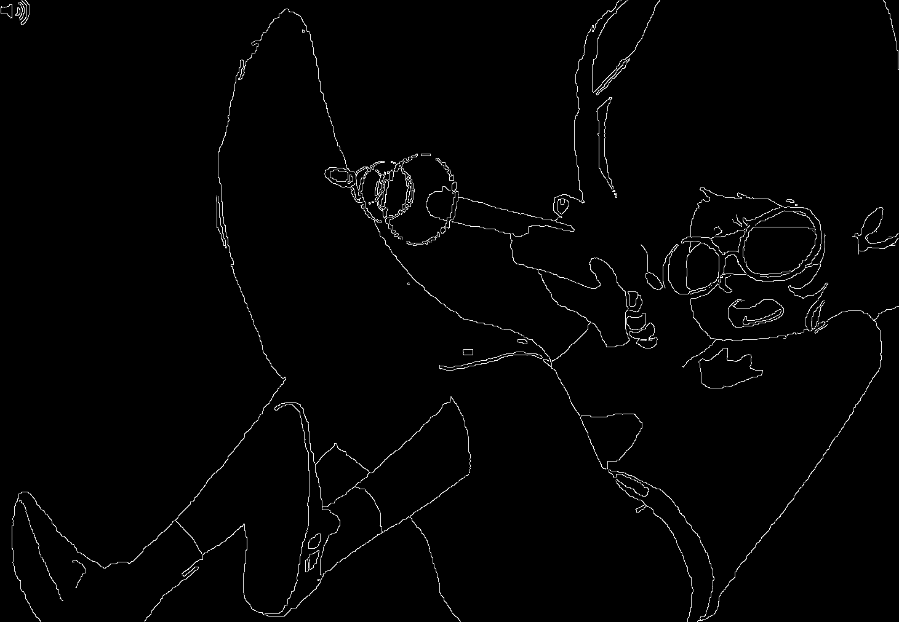

visualdistance
Table of Contents
- Locating Visual Jokes in Homestuck with Rudimentary Computer Vision
- Abstract
- Introduction
- What, Specifically, Do We Want?
- Assembling the Compendium
- Establishing a Baseline with Hamming Distance Of Binary Images
- Edge Detection
- Perceptual Hashing
- Clustering
- The Curse of Dimensionality
- An Edge-Hash Mixed Metric
- The Full Comic using K-Means Clustering
- A Different Representation
- Graph Theory
- Wait, where are their arms?
- Limitations, Space for Improvement, Takeaways
- Appendix A - Cool Clusters
Locating Visual Jokes in Homestuck with Rudimentary Computer Vision
Draft: v0.2.0 | Posted: 12/30/2018 | Updated: 11/19/2018 | confidence of success: 80% | estimated time to completion: 12/28/2018 | importance: Medium

Abstract
I use basic computer vision to identify which panels in popular webcomic Homestuck are visually similar to each other, in order to find examples of reused art / callbacks to other panels. I scrape the webcomic for it's images and apply a number of strategies in order to find one which works. Writeup may contain light spoilers for the webcomic.
Introduction
In preparation for a much larger project, I came across the following need: I would like to give examples of visually similar images in Andrew Hussie's webcomic Homestuck. Hussie reuses drawings frequently, and often repurposes previously drawn panels to easily produce new ones involving different characters (i.e. both characters looking at their hands, from the same angle, using an identical drawing but with one character's skin drawn a different color). Hussie uses this repurposing as a means of introducing visual jokes to his webcomic, frequently calling back to other panels, and then calling back to the callbacks. I'd love to be able to point to a number of these reused panels, but no crowdsourced fanmade database of visually similar images in Homestuck has been created (darn), and since Homestuck has >8000 panels combing through these by hand in O(n2) to dig them up myself sounds like something I would rather not do.
However, I really wanted those examples of visually similar panels, so I racked my brain about how I could accomplish this until I briefly remembered taking an intro computer vision course in college. The art in Homestuck is pretty simple, so I set out to see what I could do with elementary tools.
If you'd like to play along, the org document for this writeup contains all the code used for this project, and everything used in it can be found on GitHub. I'm going to loosely take a reproducible research approach here: all the code is written in python and is (hopefully) fairly easy to follow. I think in general Literate Programming seems like a bit of a hassle but I figured for a short project it would be a good exercise to try and keep everything organized enough to not feel embarrassed about sharing it.
Likewise, a large portion of this writeup is my multiple attempts at building something that works well. I try a number of different methods in this writeup, a bunch of which don't end up working that well. If you're into the process, great! If you just want to see some cool similar images in the comic feel free to skip to Appendix A where I'll post a number of them.
What, Specifically, Do We Want?
As a brief aside, I'll explain what exactly a "win condition" for this project entails.
Below are two images from two separate panels in Homestuck: 2079 and 23381
These two images are over 250 pages apart and used for entirely different things, yet they're obvious recolors of the same drawing. This sort of keyframe reuse is really common in Homestuck (and media in general), but Homestuck's themes of recursion/self-reference and also the sheer magnitude of the webcomic allows for these frames to acquire a sort of meaning unto themselves.
This is nicely illustrated on panel 2488.2
This image is hilarious.
This is a direct callback to the previously reused drawing, despite being an entirely different drawing - the hands are more realistic human hands rather than the stubby hands in the previous two images. The hands are drawn with no border, with the ring and little fingers drawn together, to give the appearance of four fingers (as in the previous drawings) instead of five.3 There's nothing inherently funny about this drawing on its own, but since we've seen a similar image repeated multiple times before, it becomes a motif which can then be riffed off of.
"Repetition serves as a handprint of human intent"
Homestuck is full of these, and I would like to find as many as possible.
Assembling the Compendium
Grabbing the non-flash images in Homestuck is straightforward enough. it can be done with relatively few lines of code thanks to our good friends Requests and Beautiful Soup 4. The code to grab all the image files in the webcomic can be found below.
import requests, bs4 firstp = 1 lastp = 10 #lastp = 8130 imglist = [] for x in range(firstp, lastp+1): url = "https://www.homestuck.com/story/" + str(x) try: page = requests.get(url) page.raise_for_status() except requests.exceptions.RequestException: continue #some numbers are missing from 1-8130, if the link 404s skip it soup = bs4.BeautifulSoup(page.text) images = soup.find_all('img', class_="mar-x-auto disp-bl") for count, image in enumerate(images, 1): imgurl = image['src'] if imgurl[0] == '/': imgurl = "https://www.homestuck.com" + imgurl #handle local reference response = requests.get(imgurl) if response.status_code == 200: with open("./screens/img/" + str(x) + "_" + str(count) + "." + imgurl.split(".")[-1], 'wb') as f: f.write(response.content) #format panelnumber_imagecount.format saves all
This assembles us a corpus of 9,442 images, mostly gifs. This is a pretty decent corpus, as far as datasets for images go, especially considering most images are gifs which contain multiple frames. It's pretty crazy how large this webcomic is, when you have it all in one folder like this. Just the images alone are more than 700MB.
I won't bother with the flashes for now - although they're certainly an important part of the comic and well worth a closer look later, there's well over three hours of flashes and extracting every frame of every flash does not sound fun or necessary for this project for now.
Establishing a Baseline with Hamming Distance Of Binary Images
A really basic thing we can start with is taking a black-and-white conversion of the images in the dataset and calculating the Hamming Distance between them. I have a feeling this won't work particularly well, but it will be useful as a metric of comparison between this and other metrics (plus it should be fairly easy to implement).
We begin with a toy dataset of ten images, which I selected by hand to give a good representative example: The images roughly fall into four groups: [Jade + Robot Jade], [Jade, John, and Terezi at computers], [yellow, green, human hands], [two random images]. Likewise, we will only bother looking at the first frame in these images, despite the fact that they are gifs. As with the flashes, it's not that it would be too difficult to do this (merely splitting the gifs into each frame + instructing the program to ignore frames within the same gif for comparisons would be easy enough), but it would just be a bit more trouble than I think it's worth for now.
Ideally the images in these groups should resemble each other more than they resemble the other images, with the two random images as control. The images that are more direct art recycles should be more similar to each other than they are to merely-similar images (e.g. the images of John and Jade should resemble each other more than they do to Terezi, since John and Jade are in the same spot on the screen and Terezi is translated in the frame).
We can start by converting every image to a binary image consisting of only black and white pixels.
#Convert all images to binary image from PIL import Image import os for image in os.listdir('./screens/img/'): img_orig = Image.open("./screens/img/" + image) img_new = img_orig.convert('1') dir_save = './screens/binary/' + image img_new.save(dir_save)
This will allow us to compare each image with a simple pixel-by-pixel comparison and count the number of pixels where the two images differ. While this is very straightforward, it sort of leaves us at the mercy of what colors are used in the panel, so the conversion isn't perfect.
For example, we have the two hands panels converted to binary images. Here we see that the backgrounds are assigned different colors, as well as the blood being completely eliminated in the first image but not the second.
There's also some issues with objects blending into the background, which could cause issues as well.
This method will likely work extremely well for detecting duplicate images (since they will produce the same binary image) but leave something to be desired for redraws (which have flaws like the two mentioned above).
Anyways, lets give it a shot4.
import PIL from PIL import Image import io, itertools, os from joblib import Parallel, delayed import multiprocessing import numpy as np def hamming(x, y): if len(x) == len(y): #Choosing the distance between the image or the image's inverse, whichever is closer return min(sum(c1 != c2 for c1, c2 in zip(x, y)), sum(c1 == c2 for c1, c2 in zip(x, y))) else: return -1 def compare_img(image1, image2, dire, resize): i1 = Image.open(dire + image1) if resize: i1 = i1.resize((100,100)) i1_b = i1.tobytes() i2 = Image.open(dire + image2) if resize: i2 = i2.resize((100,100)) i2_b = i2.tobytes() dist = hamming(i1_b, i2_b) return dist #including here a helper function so I can call a function in parallel def output_format(image1, image2, dire, resize): return [image1, image2, compare_img(image1, image2, dire, resize)] def hamming_a_directory(dire, resize=True): num_cores = multiprocessing.cpu_count() return Parallel(n_jobs=num_cores)(delayed(output_format)(image1, image2, dire, resize)\ for image1, image2 in itertools.combinations(os.listdir(dire), 2)) def quantize(img_arr, dimx=8, dimy=8): quantized = [] for x in img_arr: if x >= np.mean(img_arr): quantized.append(255) else: quantized.append(0) return quantized
<<hamming-functions>> full_list = hamming_a_directory('./screens/binary/') full_list.sort(key=lambda x: int(x[2])) return full_list[:10]
| 15251.gif | 15252.gif | 2179 |
| 20792.gif | 23381.gif | 2680 |
| 10331.gif | 15301.gif | 2691 |
| 24881.gif | 20792.gif | 2695 |
| 18701.gif | 10331.gif | 2917 |
| 15252.gif | 15301.gif | 3204 |
| 10341.gif | 15252.gif | 3240 |
| 18701.gif | 15301.gif | 3242 |
| 10341.gif | 15301.gif | 3330 |
| 23381.gif | 15301.gif | 3539 |
A surprisingly solid baseline! Here we can see that the most similar images with this method are 15251 and 15252 (John and Jade), which are redraws of each other. Likewise, it catches the similarity between 20792 and 23381 (the two hands) as well as comparing 20792 and 24881 (one of the hands + the human gag version).
There are some misses, though – 1530 is considered similar to 1033 despite the two panels being largely unrelated, which I suspect is largely because of the background for both images being solid black. Likewise, it misses the comparison between 10331 and 10341, and doesn't compare panels 23381 and 24881 despite favorably comparing both of those panels to 20792.
So it's clear we can use this to compare images to find similarities, but lets see if we can't get something slightly better.
Edge Detection
Edge Detection is a class of tools in computer vision that mathematically determine points where an image has changes in brightness (i.e. edges). This is actually quite a bit more difficult than it seems, since images typically have gradients and non-uniform changes in brightness which make finding the edges in images trickier than it seems.
That said, the nice thing about line art is that it involves, well, lines, and it seems really probable that edge detection will produce a solid result at extracting the outlines of drawn images. I'm pretty confident that this will yield us some good images so let's try and build it. We will be implementing Canny edge detection which applies a five-step process to the image:
- Apply Gaussian Blur (to reduce noise)
- Find intensity gradients (to find horizontal/vertical/diagonal edges)
- Apply non-maximum suppression (set all parts of the blurred edges to 0 except the local maxima)
- Apply double threshold (split detected edges into "strong", "weak", and "suppressed" based on gradient value)
- Track edges by hysteresis (remove weak edges that aren't near strong edges, usually due to noise)
This is even more straightforward to implement in Python, because OpenCV / Pillow has built-in support for it already, making this possible without actively writing each step!
import cv2 as cv import os from PIL import Image folder = "./screens/img/" target = "./screens/canny/" for image in os.listdir(folder): if not os.path.isfile(image): continue imgdir = folder + image #gif -> png for opencv compatability im_gif = Image.open(imgdir) saveto = target + image.split(".")[0] + ".png" im_gif.save(saveto) #Canny Edge Detection, overwrite png img_orig = cv.imread(saveto, 1) edges = cv.Canny(img_orig,100,200) img_new = Image.fromarray(edges) img_new.save(saveto)
Here's what we end up with:
Wow, this turns out great!
We don't get amazing results on every frame, and some of the frames with busier backgrounds suffer a bit from this, like this one:

But I think the result extracts the edges with enough precision that it's functional enough for now.
<<hamming-functions>> full_list = hamming_a_directory('./screens/canny/') full_list.sort(key=lambda x: int(x[2])) return full_list[:10]
| 23381.png | 20792.png | 31 |
| 10331.png | 10341.png | 224 |
| 23381.png | 10331.png | 458 |
| 10331.png | 20792.png | 461 |
| 18701.png | 20792.png | 479 |
| 23381.png | 18701.png | 480 |
| 10331.png | 18701.png | 480 |
| 23381.png | 10341.png | 514 |
| 20792.png | 10341.png | 519 |
| 23381.png | 24881.png | 522 |
The results for this hamming distance are somewhat disappointing: it's really accurate at detecting colorswaps - the hands and the two images of Jade receive appropriately low scores. But it's not so great at detecting reused outlines (the images of Jade and John no longer even crack the top 10 despite being the most similar by binary image hamming distance).
Perceptual Hashing
Hash functions are functions that can map data of an arbitrary size down to data of a fixed size. Usually these take the form of cryptographic hash functions, which are good for sensitive data because they have high dispersion (they change a lot when the input is changed even a little bit), so its not very useful for working backwards and determining what created the hash. Perceptual Hashing, on the other hand, maps data onto hashes while maintaining a correlation between the source and the hash. If two things are similar, their hashes will be similar with perceptual hashing, which is a useful mechanism for locating similar images (TinEye allegedly uses this for Reverse Image Searching).
Hackerfactor has a semi-famous blogpost from 2011 about perceptual hashing algorithms, in which he describes average hashing and pHash - two straightforward and very powerful versions of idea. Average hashing in particular is very easy to grasp:
- squish the image down to 8x8 pixels
- convert to greyscale
- average colors
- set every pixel to 1 or 0 depending on whether it is greater/worse than the average
- turn this binary string into a 64-bit integer. Then, like with our other attempts, you can use hamming distance to compare two images.
Let's give it a whirl.
import cv2 as cv import os import numpy as np import PIL from PIL import Image <<hamming-functions>> folder = "./screens/img/" target = "./screens/phash/" for image in os.listdir(folder): imgdir = folder + image #resize to 8x8 im_gif = Image.open(imgdir) im_gif = im_gif.resize((8,8)) saveto = target + image.split(".")[0] + ".png" im_gif.save(saveto) #convert to greyscale im_gif = Image.open(saveto).convert('L') im_gif.save(saveto) #for each pixel, assign 0 or 1 if above or below mean quantized_img = Image.fromarray(np.reshape(quantize(list(im_gif.getdata())), (8, 8)).astype('uint8')) quantized_img.save(saveto)
Just a recap of all the steps:
8x8 image (shown here and also enlarged)
convert to greyscale
quantize based on mean value
find hamming distances between images
<<hamming-functions>> full_list = hamming_a_directory('./screens/phash/', False) full_list.sort(key=lambda x: int(x[2])) return full_list[:10]
| 23381.png | 20792.png | 17 |
| 10331.png | 18701.png | 17 |
| 10331.png | 10341.png | 20 |
| 15251.png | 15301.png | 23 |
| 15252.png | 15301.png | 23 |
| 24881.png | 20792.png | 23 |
| 15251.png | 15252.png | 24 |
| 23381.png | 10331.png | 24 |
| 15251.png | 20792.png | 25 |
| 15252.png | 20792.png | 25 |
I'm a little unsure what to make of this. On the one hand, it gets almost every single match I wanted. The two hands are the closest, it catches all three of the sitting-at-computer images, it catches the two jades, it seems pretty good.
But I remain perplexed about why 1033 is so insistent on matching up with completely random images. Between edge detection and perceptual hashing within the context of our 10-image set, since the former seems less likely to produce false positives but the latter seems better.
Another variant of this idea is pHash, which uses discrete cosine transform (DCT) in place of a simple average. OpenCV has a module for this so I won't bother coding it from scratch.
import cv2 as cv import os import numpy as np import PIL from PIL import Image folder = "./screens/img/" target = "./screens/phash/" for image in os.listdir(folder): imgdir = folder + image #gif -> png for opencv compatability im_gif = Image.open(imgdir) saveto = target + image.split(".")[0] + ".png" im_gif.save(saveto) #Perceptual Hashing, overwrite png img_orig = cv.imread(saveto, 1) img_hash = cv.img_hash.pHash(img_orig)[0] bin_hash = map(lambda x: bin(x)[2:].rjust(8, '0'), img_hash) split_hash = [] for x in bin_hash: row = [] for y in x: row.append(int(y)*255) split_hash.append(row) img_new = Image.fromarray(np.array(split_hash).astype('uint8')) img_new.save(saveto)
<<hamming-functions>> full_list = hamming_a_directory('./screens/phash/', False) full_list.sort(key=lambda x: int(x[2])) return full_list[:10]
| 15251.png | 15252.png | 17 |
| 24881.png | 20792.png | 19 |
| 10331.png | 18701.png | 22 |
| 15301.png | 10331.png | 23 |
| 23381.png | 24881.png | 23 |
| 15252.png | 24881.png | 24 |
| 24881.png | 18701.png | 24 |
| 15301.png | 24881.png | 25 |
| 18701.png | 20792.png | 25 |
| 15251.png | 18282.png | 26 |
No dice, this is even worse than average hashing.
Alright, as a last ditch attempt, let's try running this on the canny edge-detected images instead of the actual source images.
import cv2 as cv import os import numpy as np import PIL from PIL import Image <<hamming-functions>> folder = "./screens/canny/" target = "./screens/phash/" for image in os.listdir(folder): imgdir = folder + image #resize to 8x8 im_gif = Image.open(imgdir) im_gif = im_gif.resize((8,8)) saveto = target + image.split(".")[0] + ".png" im_gif.save(saveto) #convert to greyscale im_gif = Image.open(saveto).convert('L') im_gif.save(saveto) #for each pixel, assign 0 or 1 if above or below mean quantized_img = Image.fromarray(np.reshape(quantize(list(im_gif.getdata())), (8, 8)).astype('uint8')) quantized_img.save(saveto)
<<hamming-functions>> import numpy as np full_list = hamming_a_directory('./screens/phash/', False) full_list.sort(key=lambda x: int(x[2])) return full_list[:10]
| 23381.png | 20792.png | 0 |
| 15251.png | 15301.png | 2 |
| 15251.png | 23381.png | 2 |
| 15251.png | 18701.png | 2 |
| 15251.png | 20792.png | 2 |
| 15301.png | 23381.png | 2 |
| 15301.png | 18701.png | 2 |
| 15301.png | 20792.png | 2 |
| 23381.png | 18701.png | 2 |
| 23381.png | 10341.png | 2 |
Again, no dice; all of the images are far too similar to create substantially different hashes, which means the list of false matches is extraordinarily high.
Clustering
We take a brief pause here to ponder the following question: how are we going to pull out clusters of related images in a sea of comparisons? It's a bit weird of a problem, since there's no validation set, an unknown number of clusters, and an undefined/large quantity of "clusters" with cluster size 1 (i.e. unique panels).
The first attempt at a solution I think I'm going to take here is a very very simple one, keeping with the general idea of this being a relatively beginner take on the problem. We're going to take a two-step approach to pulling out the clusters.
Pruning
First, we are going to filter the images by ones that appear to be present in at least one cluster. Doing this is pretty straightforward - we can just calculate the mean and standard deviation of each panel and filter out images that are sufficiently far away from the average panel. This will allow us to only cluster data that actually can be clustered meaningfully, since after doing this we can just ignore unique panels.
import numpy as np import os from PIL import Image <<hamming-functions>> def nxn_grid_from_itertools_combo(panels, full_list): # Create nxn grid such that x,y is a comparison between panel x and panel y # this is the format that you'd get if you did every comparison but we used itertools # be more efficient. Now that we need these comparisons in a matrix we need to convert it. grid = [] for image1 in panels: compare_img1 = [] for image2 in panels: if image1 == image2: compare_img1.append(0) else: val = [x[2] for x in full_list if ((x[0] == image1 and x[1] == image2) or \ (x[0] == image2 and x[1] == image2))] if val: compare_img1.append(val[0]) else: compare_img1.append(grid[panels.index(image2)][panels.index(image1)]) grid.append(compare_img1) return grid def filter_out_nonduplicates(directory, resize=True): ## Perform comparisons without duplicates full_list = hamming_a_directory(directory, resize) ## convert comparisons to an nxn grid, as if we had duplicates # Create list of panels panels = os.listdir(directory) # Create nxn grid such that x,y is a comparison between panel x and panel y nxn_grid = nxn_grid_from_itertools_combo(panels, full_list) # find mu and sigma of each panel compared to each other panel, filter out probable matches return filter_grid(nxn_grid) def filter_grid(grid): gmean = np.mean(grid) gstd = np.std(grid) filtered_grid = [] for i, panel in enumerate(grid): for x, comparison in enumerate(panel): flag = False if i != x: if comparison < (gmean-gstd): flag = True break if flag == True: filtered_grid.append(panel) return filtered_grid def move_directory(imgsrc, directory, filename): if not os.path.exists(directory): os.makedirs(directory) try: newfile = Image.open(imgsrc+filename) newfile.save(directory+filename) except: newfile = Image.open(imgsrc+filename[:-3]+"gif") newfile.save(directory+filename[:-3]+"gif")
<<filter_dupes>> return filter_out_nonduplicates('./screens/canny/')[0]
A Brief Overview of K-Means Clustering
Then, we can apply a variation on k-means clustering to pull apart these values. This is probably not the most efficient way to do it, but it's pretty cool!
K-means clustering works via a four step process:
- Initialize k random points in n-dimensional space, usually points in the dataset
- Group all data points to the closest point
- When all points are grouped, calculate the mean of everything assigned to that point
- If the grouping of points changed, repeat step 2 with the new mean in place of the old K. If they stayed the same, return the clustering and stop.
This is intuitive for clustering things relative to variables, but its not immediately obvious how we can apply it to our images.
To illustrate what we will be doing, imagine a 2D plane with the x-axis representing distance to panel A and the y-axis representing distance to panel B
So if we take any random panel and use the hamming distance, you can represent this image in the space of these two panels. Proximity to 0 represents similarity, distance from 0 represents dissimilarity. So using panel A would yield something like (0, 15000) since panel A == itself, and likewise using panel B would yield something like (15000, 0). If you introduced panel C, which is a redraw of panel A, you might expect a value like (800, 15000). If we were only trying to cluster our images based on these two panels, the k-means solution makes perfect sense.
So you can imagine a third panel being considered as a z-axis, which turns this into a 3d space. Its in three dimensions now, but the basic idea is still the same, and k-means solution still makes sense (just using three random values per point instead of 2).
We extend this from 3-dimensional space to n-dimensional space, which is harder to represent visually but is the same structurally as before you can represent an image by its distance to every other image in the set, and you can initialize a point in this n-dimensional space by generating a list of n random numbers: [distance from panel1, distance from panel2, distance from panel3, … , distance from paneln ].
We can increment k starting from 1, and we can run each value of k a few times and pick the lowest variation clusters. We can loosely adapt the elbow method to select a value of K.6
Its using this framework in which we can apply k-means clustering as an ok means of sorting the images into visually similar groups.
Implementation
import random, math import numpy as np from joblib import Parallel, delayed import multiprocessing <<hamming-functions>> # returns an integer representing distance between two points def find_distance(x,y): #use hamming distance if greater than R^10, otherwise use Euclidian Distance if len(x) > 10: return hamming(quantize(x), quantize(y)) else: #sqrt ( (a-x)^2 + (b-y)^2 + (c-z)^2 ... ) distance = 0 for origin, destination in zip(x,y): distance += (origin-destination)**2 return math.sqrt(distance) # A single attempt at clustering data into K points def kmeans_clustering(matrix, k): #init k random points points = random.sample(matrix, k) #placeholders oldclusters = [-1] clusters = [] for i in range(k): clusters.append([]) emptyclusters = clusters #loop until points don't change while(oldclusters != clusters): oldclusters = clusters clusters = emptyclusters #use space instead of time to avoid iterating to zero out every loop #group all data points to nearest point for x in matrix: distances = [] for y in points: distances.append(find_distance(x,y)) clusters[distances.index(min(distances))].append(x) #when all points are grouped, calculate new mean for each point for i, cluster in enumerate(clusters): if cluster: points[i] = map(np.mean, zip(*cluster)) return clusters # run K-means a few times, return clustering with minimum intracluster variance def cluster_given_K(matrix, k, n=25): clusterings = [] # run k-means a few times for x in range(n): clusterings.append(kmeans_clustering(matrix, k)) # calculate intracluster variance for each clustering ## this is just the sum of all distances from every point to it's cluster's center distances = [] for clustering in clusterings: variance = 0 for cluster in clustering: center = map(np.mean, zip(*cluster)) for point in cluster: variance += find_distance(point,center) distances.append(variance) return [clusterings[distances.index(min(distances))], min(distances)] # Loosely look for the elbow in the graph def elbowmethod(candidates, debug_flag=0): varscores = zip(*candidates)[1] #just for debug purposes if debug_flag == 1 return varscores percentages = map(lambda x: 1-(x/varscores[0]), varscores) elbowseek = [] for point in range(0,len(percentages)-1): if point is 0: elbowseek.append(0) elif point is len(percentages)-1: elbowseek.append(percentages[point]-percentages[point-1]) else: elbowseek.append((percentages[point]-percentages[point-1]) - \ (percentages[point+1]-percentages[point])) return elbowseek # Runs cluster_given_K multiple times, for each value of K def cluster(matrix, minK=1, maxK=-1, runs=50, debug_flag=0): if not matrix: return [] if maxK is -1: maxK = len(matrix) num_cores = multiprocessing.cpu_count() candidates = Parallel(n_jobs=num_cores)(delayed(cluster_given_K)(matrix, x, runs) for x in range(minK, maxK)) elbowseek = elbowmethod(candidates, debug_flag) if debug_flag == 1: return elbowseek, candidates, candidates[elbowseek.index(max(elbowseek))][0] return candidates[elbowseek.index(max(elbowseek))][0] def give_names(clustering, names, grid): ret = [] for x in clustering: ret_a = [] for y in x: ret_a.append(names[grid.index(y)]) ret.append(ret_a) return ret
<<clustering>>
return cluster([[1,1], [1,1], [1,0], [1,3], [10,12], [10,11], [10,10], [20,20], [22,20], [21,21]])
Awesome, we have an implementation working now.
K-Means vs Canny Edge Detection
Just so we can see before running it on the full webcomic pruned to only include likely-clustered images, lets just see what we get if we run it on our 10 image dataset of canny edge-detected images.
<<clustering>> <<filter_dupes>> directory = './screens/canny/' full_list = hamming_a_directory(directory) panels = os.listdir(directory) grid = nxn_grid_from_itertools_combo(panels, full_list) return give_names(cluster(grid), panels, grid)
Well, that's sort of funny; the elbow method yields k=2 here because 18282 is so noisy compared to all the other panels, which certainly makes enough sense. Let's see if we can force it to use at least three clusters.
<<clustering>> <<filter_dupes>> directory = './screens/canny/' full_list = hamming_a_directory(directory) panels = os.listdir(directory) grid = nxn_grid_from_itertools_combo(panels, full_list) return give_names(cluster(grid, 3), panels, grid)
That's better.
Let's run it on the pruned list real fast just to make sure the implementation works the full way through.
<<clustering>> <<filter_dupes>> directory = './screens/canny/' ham = filter_out_nonduplicates(directory) return give_names(cluster(ham[2]), ham[0], ham[2])
K-Means vs Perceptual Hashes of Images
Something funny I'm noticing is that the elbow method fails terribly for such a small subset of the hash images, but the clustering is pretty solid if you have a value for K determined already. Here's what it wants to spit out normally:
<<clustering>> <<filter_dupes>> directory = './screens/phash/' ham = filter_out_nonduplicates(directory, False) return give_names(cluster(ham[2]), ham[0], ham[2])
Yuck! Here's the same code but with a narrow range of k-values already selected:
<<clustering>> <<filter_dupes>> import matplotlib.pyplot as plt directory = './screens/phash/' ham = filter_out_nonduplicates(directory, False) return give_names(cluster(ham[2], 4, 6, 100), ham[0], ham[2])
It's perfect aside from the miss on 1870 discussed earlier. A huge improvement compared to the same values of K applied to merely the canny images, which we can visualize below
<<clustering>> <<filter_dupes>> import matplotlib.pyplot as plt directory = './screens/phash/' ham = filter_out_nonduplicates(directory, False) clust = cluster(ham[2], 1, -1, 100, 1)[0] plt.plot(range(1, len(clust)+1), clust) plt.title('SSE vs K - Image Hashes') plt.xlabel('Value of K') plt.ylabel('SSE') plt.show() directory = './screens/canny/' full_list = hamming_a_directory(directory) panels = os.listdir(directory) grid = nxn_grid_from_itertools_combo(panels, full_list) clust = cluster(grid, 1, -1, 100, 1)[0] plt.plot(range(1, len(clust)+1), clust) plt.title('SSE vs K - Edge Detected Images') plt.xlabel('Value of K') plt.ylabel('SSE') plt.show()
The elbow method is completely failing us, and I don't blame it, given the following results for the variances by value of K:
It worked fine for the edge detection case (in this case, the first try with 18282 separated out) but there's no elbow in sight for the image hashes. I don't know if this will extend to the full dataset or not, but I'll have to rethink things if that ends up being the case.
K-Means vs Direct Comparison of Images
For smaller images we can directly compare the contents of the images instead of their distances relative to each other, which could yields much smaller sets if we use the hashes (which are 64 pixels instead of 10000 pixels or ~9000 comparisons for edge detected images and hamming distances, respectively). Let's test it out.
<<clustering>> <<filter_dupes>> from PIL import Image import os import matplotlib.pyplot as plt import numpy as np directory = './screens/phash/' resize_flag = False panels = [] values = [] for image in os.listdir(directory): panels.append(image) val = list(Image.open(directory+image).getdata()) values.append(val) clst = cluster(values, 4) return give_names(clst, panels, values)
| 15251.png | ||
| 15252.png | 15301.png | 18282.png |
| 23381.png | ||
| 24881.png | 20792.png | |
| 10331.png | 18701.png | 10341.png |
The results are honestly sort of random, and running it on a larger subset gives similarly mediocre results.
The Curse of Dimensionality
Clustering aside, let's just see what happens if we find the hamming distances on the hashes for the full webcomic:
<<hamming-functions>> import numpy as np full_list = hamming_a_directory('./screens/phash/', False) full_list.sort(key=lambda x: int(x[2])) return full_list[:20]
| 10051.png | 10081.png | 0 |
| 10062.png | 10161.png | 0 |
| 10121.png | 10151.png | 0 |
| 10202.png | 10203.png | 0 |
| 10202.png | 11201.png | 0 |
| 10202.png | 11211.png | 0 |
| 10202.png | 11251.png | 0 |
| 10202.png | 14681.png | 0 |
| 10202.png | 75461.png | 0 |
| 10203.png | 11201.png | 0 |
| 10203.png | 11211.png | 0 |
| 10203.png | 11251.png | 0 |
| 10203.png | 14681.png | 0 |
| 10203.png | 75461.png | 0 |
| 10342.png | 10792.png | 0 |
| 10382.png | 11172.png | 0 |
| 10532.png | 10541.png | 0 |
| 10532.png | 10551.png | 0 |
| 10532.png | 10561.png | 0 |
| 10532.png | 18101.png | 0 |
Right away the results are super interesting; and just seeing which images generate the same hash makes me fairly optimistic about our ability to cluster images. For example, from the looks of this images containing Alchemiter Recipes are all being thrown into the same hash, which is remarkably encouraging.
Let's see what happens if we run k-means clustering on a larger subset of the data (our 10 images plus the first 100 panels of the comic)
<<hamming-functions>> <<filter_dupes>> <<clustering>> import matplotlib.pyplot as plt import numpy as np directory = './screens/phashbig/' resize_flag = False panels = os.listdir(directory) grid = nxn_grid_from_itertools_combo(panels, hamming_a_directory(directory, resize_flag)) clust = cluster_given_K(grid, 50)[0] names = give_names(clust, panels, grid) for i, x in enumerate(names): path = "./screens/imgbig/clustered/" + str(i) + "/" for y in x: move_directory("./screens/imgbig/", path, y)
<<hamming-functions>> <<filter_dupes>> <<clustering>> import matplotlib.pyplot as plt import numpy as np directory = './screens/cannybig/' resize_flag = False panels = os.listdir(directory) grid = nxn_grid_from_itertools_combo(panels, hamming_a_directory(directory, resize_flag)) clust = cluster(grid, 30, 32) names = give_names(clust, panels, grid) for i, x in enumerate(names): path = "./screens/imgbig/clustered/" + str(i) + "/" for y in x: move_directory("./screens/imgbig/", path, y)
Honestly, the results are pretty disappointing. This method is very, very slow and cluster the images sort of randomly regardless of whether you use euclidian or hamming distance to find the centers of each cluster.
But why? K-means clustering seemed to work pretty well with only a couple images, and the hamming distance between any two images seems to be a relatively quick and accurate means of distance between them.
Let's see if we can somehow tackle both of these problems.
Principal Component Analysis
Theres this concept called The Curse of Dimensionality which refers to wonky behaviors that arise in high-dimensional spaces that do not occur in low-dimensional spaces. Among these is distance functions being less and less useful the higher you go.
Imagine you have three points:
a. [0, 0, 0, … 0, 100] b. [2, 2, 2, … 2, 104] c. [1, 1, 1, … 1, 1]
The Euclidean distance between pairs a-b and b-c here depends a lot upon the number of dimensions you have. If you're trying to determine which of points b or c is closer to point a using euclidian distance, you would add the distance along each axis and select the point with the shorter distance. Point c is 1 unit closer to point a along each axis, but with a low number of dimensions this dwarfed by the last value being very far away from point c and very close to point b. But, if we have 1000 dimensions, the random fluctuations on the midly different axes start adding up to be greater than the one important axis, and Euclidean distance stops being a good metric.
What we can do to get around this is perform Principal Component Analysis, or PCA. PCA is a statistical procedure useful for dimensionality reduction which, appropriately, reduces the number of dimensions used in a dataset. StatQuest has a good video on the topic, but the high level idea is that you reshape the data along the eigenvectors of it's covariance matrix, and then use only the vectors which account for the greatest degree of variation in order to reduce the number of dimensions while preserving the most information possible. We can use this to reduce our R9000 dataset to something a lot more manageable - for example, R3. If we can somehow map the dataset into a reasonably limited dimension without losing too much information, we could use normal Euclidean distance and have it work properly. As an added bonus, performing calculations on a 9000x3 grid is substantially faster than performing calculations on a 9000x9000 grid, so our algorithm should speed up substantially by doing this as well (using PCA to speed up algorithms is pretty standard fare in machine learning)
from sklearn.decomposition import PCA <<filter_dupes>> <<clustering>> import matplotlib.pyplot as plt import numpy as np directory = './screens/phash/' resize_flag = False panels = os.listdir(directory) grid = nxn_grid_from_itertools_combo(panels, hamming_a_directory(directory, resize_flag)) pca = PCA(n_components=3) principalComponents = pca.fit_transform(grid).tolist() clust = cluster(principalComponents) names = give_names(clust, panels, principalComponents) return names
| 10331.png | 18701.png | 10341.png | |
| 23381.png | 24881.png | 20792.png | |
| 15251.png | 15252.png | 15301.png | 18282.png |
We managed to reduce all of our data in the toy dataset to 3-dimensions instead of 10. This makes it go much faster! It also has a nice friendly added bonus of allowing us to visualize the clusters a bit easier:
<<clustering>> <<filter_dupes>> from sklearn.decomposition import PCA import matplotlib.pyplot as plt from mpl_toolkits.mplot3d import Axes3D directory = './screens/phash/' resize_flag = False panels = os.listdir(directory) grid = nxn_grid_from_itertools_combo(panels, hamming_a_directory(directory, resize_flag)) pca = PCA(n_components=3) principalComponents = pca.fit_transform(grid).tolist() clust = cluster(principalComponents) names = give_names(clust, panels, principalComponents) fig = plt.figure() ax = fig.add_subplot(111, projection='3d') marks = ['r', 'b', 'g'] for i, cluster in enumerate(clust): for pt in cluster: ax.scatter(pt[0], pt[1], pt[2], c=marks[i]) plt.title('10-img set with PCA') plt.show()
Now you can clearly see how the images are clustered together! How wonderful. Let's run it on the larger subset of 110 images and see what it spits out as clusters.
<<filter_dupes>> <<clustering>> import matplotlib.pyplot as plt import numpy as np from sklearn.decomposition import PCA directory = './screens/phashbig/' resize_flag = False panels = [] for image in os.listdir(directory): panels.append(image) grid = nxn_grid_from_itertools_combo(panels, hamming_a_directory(directory, resize_flag)) pca = PCA(n_components=3) principalComponents = pca.fit_transform(grid).tolist() clust = cluster(principalComponents, 2, 25, 100) names = give_names(clust, panels, principalComponents) for i, x in enumerate(names): path = "./screens/imgbig/clustered/" + str(i) + "/" for y in x: move_directory("./screens/imgbig/", path, y)
This is way faster and also does a pretty good job! Here's one cluster it yields, for comparison
Let's try Canny images.
<<filter_dupes>> <<clustering>> import matplotlib.pyplot as plt import numpy as np from sklearn.decomposition import PCA directory = './screens/cannybig/' panels = [] for image in os.listdir(directory): panels.append(image) grid = nxn_grid_from_itertools_combo(panels, hamming_a_directory(directory)) pca = PCA(n_components=3) principalComponents = pca.fit_transform(grid).tolist() clust = cluster(principalComponents, 3, 25, 100) names = give_names(clust, panels, principalComponents) for i, x in enumerate(names): path = "./screens/imgbig/clustered/" + str(i) + "/" for y in x: move_directory("./screens/imgbig/", path, y)
Similarly fast and good. Both of these yield relatively small number of clusters and sometimes miss, but that's probably to be expected considering we're separating things via elbow method.
<<clustering>> <<filter_dupes>> import matplotlib.pyplot as plt import numpy as np from sklearn.decomposition import PCA directory = './screens/phashbig/' panels = [] for image in os.listdir(directory): panels.append(image) grid = nxn_grid_from_itertools_combo(panels, hamming_a_directory(directory)) pca = PCA(n_components=3) principalComponents = pca.fit_transform(grid).tolist() clust = cluster(principalComponents, 1, -1, 100, 1)[0] plt.plot(range(1, len(clust)+1), clust) plt.title('SSE vs K - Image Hashes using PCA') plt.xlabel('Value of K') plt.ylabel('SSE') plt.show()
Not really a solid elbow to be found on this chart.
An Edge-Hash Mixed Metric
Since our algorithm is much faster now its worthwhile to consider distance between both Edge-Detected Images and Perceptual Hashes and devise some sort of mixed criteria. This way, if something shows up very strongly in one group but not the other, we can average them together and ideally get the best of both worlds.
import numpy as np import os <<filter_dupes>> def mixed_metric(edgedirectory, hashdirectory, edgeresize=True, hashresize=False): # find distances for canny images panels = os.listdir(edgedirectory) ham = hamming_a_directory(edgedirectory, edgeresize) ham_side = zip(*ham)[2] hmean = np.mean(ham_side) grid_canny = nxn_grid_from_itertools_combo(panels, map(lambda x: [x[0], x[1], x[2]/hmean], ham)) # find distances for phash images ham = hamming_a_directory(hashdirectory, hashresize) ham_side = zip(*ham)[2] hmean = np.mean(ham_side) grid_hash = nxn_grid_from_itertools_combo(panels, ham) # score return mixed_grid(grid_canny, grid_hash, hmean) def mixed_grid(grid_canny, grid_hash, hmean): mutual_grid = [] for x, y in zip(grid_canny, grid_hash): z = [] for point_a, point_b in zip(x, y): z.append(int(math.floor((point_b + (point_a * hmean))/2))) mutual_grid.append(z) return mutual_grid
<<mixed>> <<clustering>> from sklearn.decomposition import PCA panels = [] for image in os.listdir('./screens/canny/'): panels.append(image) grid = mixed_metric('./screens/canny/', './screens/phash/') return grid
| 0 | 20 | 20 | 23 | 25 | 22 | 23 | 20 | 55 | 25 |
| 20 | 0 | 20 | 21 | 24 | 24 | 21 | 20 | 54 | 24 |
| 20 | 20 | 0 | 20 | 20 | 22 | 21 | 21 | 53 | 21 |
| 23 | 21 | 20 | 0 | 20 | 18 | 18 | 8 | 53 | 21 |
| 25 | 24 | 20 | 20 | 0 | 21 | 21 | 18 | 55 | 22 |
| 22 | 24 | 22 | 18 | 21 | 0 | 14 | 20 | 54 | 12 |
| 23 | 21 | 21 | 18 | 21 | 14 | 0 | 20 | 53 | 21 |
| 20 | 20 | 21 | 8 | 18 | 20 | 20 | 0 | 54 | 21 |
| 55 | 54 | 53 | 53 | 55 | 54 | 53 | 54 | 0 | 55 |
| 25 | 24 | 21 | 21 | 22 | 12 | 21 | 21 | 55 | 0 |
Sweet, let's take a look at what it does cluster-wise:
<<mixed>> <<clustering>> from sklearn.decomposition import PCA panels = [] for image in os.listdir('./screens/canny/'): panels.append(image) grid = mixed_metric('./screens/canny/', './screens/phash/') return give_names(cluster(filter_grid(grid)), panels, grid)
| 23381.png | 20792.png | |
| 10331.png | 18701.png | 10341.png |
| 24881.png |
Well, its another thing worth trying in the larger dataset at least.
The Full Comic using K-Means Clustering
Some Last Minute Scale Considerations
Before we run the clustering on the full comic we should do some brief consideration of what will change when we move up to the full webcomic.
One thing we should notice is that in our implementation we resize the images when calculating the hamming distance between two images so that they are the same size. This resizing step is typically the slowest part of these operations, so it's meaningful to think about how we can minimize this process as much as possible.
If we resize both images whenever we need to compare them, we will resize each image one time for every pair that image has. Put another way, you perform 2 resizes (one for each image) for each comparison you make. So given n images, you perform \((n!/(n-2)!)\) resizes. For 10 or even 100 images this isn't terribly noticible (180 and 19800, respectively) but it gets to be pretty large once you get to 9000 (~161 million). Since you can just do this step beforehand, this is entirely meaningless labor, so let's get that out of the way first.
<<hamming-functions>> dire = './screens/canny/' dest = './screens/cannyfilter/' for image in os.listdir(dire): img_orig = Image.open(dire+image) img_new = img_orig.resize((100, 100)) dir_save = dest+image if os.path.isdir(dest): img_new.save(dir_save) else: os.mkdir(dest) img_new.save(dir_save)
Likewise, finding all the hamming distances takes a really long time; it would be nice if we could save them somehow. The values for these distances are static, so if we want to run our clustering more than once (i.e. with different parameters) we can skip this step the second time onwards. Luckily there's this cool python module called pickle which lets you to save data to a file.
import numpy as np import os import pickle <<filter_dupes>> directory = './screens/cannyfilter/' # find distances for canny images panels = [] for image in os.listdir(directory): panels.append(image) ham = hamming_a_directory(directory, False) picklecan = open("cannyhamming.~ATH", 'wb') pickle.dump(ham, picklecan) picklecan.close()
import numpy as np import os import pickle <<filter_dupes>> directory = './screens/phash/' # find distances for canny images panels = [] for image in os.listdir(directory): panels.append(image) ham = hamming_a_directory(directory, False) picklecan = open("hashhamming.~ATH", 'wb') pickle.dump(ham, picklecan) picklecan.close()
and open them again just to check
import cPickle as pickle import timeit a = open("cannyhamming.~ATH", "rb") z = pickle.load(a) b = open("hashhamming.~ATH", "rb") y = pickle.load(b) return len(z), len(y)
| 45 | 45 |
Loading the files takes a little time for the full comic, but if we use cPickle instead of pickle we can get it down to around 6 minutes which is a nice improvement over just raw recalculating it every time (which takes ages).
Likewise, it would probably be useful to speed up our grid conversion method for the full comic, since currently it operates in O(n2). I have a sort of hacky solution to this so let's test it briefly.
import numpy as np def nxn_grid_faster(panels, full_list): #dictionary lookup is average O(1), list lookup is O(n) #ergo, store indices of panels in a dictionary to look up faster pandict = {} for i, panel in enumerate(panels): pandict[panel] = i #initialize grid size nxn grid = [] for x in range(len(panels)): grid.append(list(np.zeros((len(panels),), dtype=int))) # iterate through comparisons one time for compare in full_list: firstimg = compare[0] secondimg = compare[1] value = compare[2] grid[pandict[firstimg]][pandict[secondimg]] = value grid[pandict[secondimg]][pandict[firstimg]] = value return grid
<<fasternxn>> <<hamming-functions>> import os panels = [] for image in os.listdir('./screens/cannyfilter/'): panels.append(image) ham = hamming_a_directory('./screens/cannyfilter/', False) return nxn_grid_faster(panels, ham)
| 0 | 2215 | 2317 | 2145 | 2324 | 2101 | 2217 | 2018 | 3962 | 2164 |
| 2215 | 0 | 2120 | 2086 | 2195 | 2066 | 2174 | 1971 | 3905 | 2117 |
| 2317 | 2120 | 0 | 1790 | 2015 | 1724 | 1934 | 1641 | 3895 | 1845 |
| 2145 | 2086 | 1790 | 0 | 1781 | 1610 | 1762 | 689 | 3793 | 1673 |
| 2324 | 2195 | 2015 | 1781 | 0 | 1847 | 1963 | 1616 | 3826 | 1894 |
| 2101 | 2066 | 1724 | 1610 | 1847 | 0 | 1718 | 1467 | 3825 | 1033 |
| 2217 | 2174 | 1934 | 1762 | 1963 | 1718 | 0 | 1599 | 3811 | 1803 |
| 2018 | 1971 | 1641 | 689 | 1616 | 1467 | 1599 | 0 | 3716 | 1520 |
| 3962 | 3905 | 3895 | 3793 | 3826 | 3825 | 3811 | 3716 | 0 | 3796 |
| 2164 | 2117 | 1845 | 1673 | 1894 | 1033 | 1803 | 1520 | 3796 | 0 |
Great, finally let's try and see if we can get the full comic grid written to a file so we only have to compute it once.
import cPickle as pickle import os <<fasternxn>> panels = os.listdir('./screens/phash/') z = open("cannyhamming.~ATH", "rb") #z = open("hashhamming.~ATH", "rb") biglist = pickle.load(z) biggrid = nxn_grid_faster(panels, biglist) pickle_biglist = open("cannygrid.~ATH", 'wb') #pickle_biglist = open("hashgrid.~ATH", 'wb') pickle.dump(biggrid, pickle_biglist) pickle_biglist.close()
So quick! This is great.
A first attempt at the full comic
We start out with the mixed metric
<<mixed>> <<clustering>> from sklearn.decomposition import PCA import matplotlib.pyplot as plt import cPickle as pickle import numpy as np #get panel names panels = os.listdir('./screens/cannyfilter/') #load grids z = open("cannygrid.~ATH", "rb") cannygrid = pickle.load(z) cannymean = np.mean(cannygrid) for m, x in enumerate(cannygrid): for i, pt in enumerate(x): cannygrid[m][i] = pt/cannymean y = open("hashgrid.~ATH", "rb") hashgrid = pickle.load(y) #find mixed grid grid = mixed_grid(cannygrid, hashgrid, np.mean(hashgrid)) #find pca pca = PCA(n_components=3) principalComponents = pca.fit_transform(grid).tolist() #cluster lowclust = 4 highclust = 300 clust = cluster(principalComponents, lowclust, highclust, 100, 1) #attach names names = give_names(clust[2], panels, principalComponents) #visualize plt.plot(range(lowclust, len(clust[0])+lowclust), clust[0]) plt.title('SSE vs K - Image Hashes using PCA') plt.xlabel('Value of K') plt.ylabel('SSE') plt.show() #move to folders for i, x in enumerate(names): path = "./screens/img/clustered/" + str(i) + "/" for y in x: move_directory("./screens/img/", path, y)
As before, running the full comic on all values of K sorta sucks, and spits back a value of k=4 which is far too wide to be actually useful.
Admittedly, Even a relatively generous interpretation of the elbow method is not very useful; running with k=100 also spits back clusters that are way too wide to be useful. I need to do some reassessment about what a "good" number for this problem really represents, since I am after all more interested in finding near-duplicates than I am in vaguely clustering together alike images.

Now let's try on edge detection:
<<mixed>> <<clustering>> from sklearn.decomposition import PCA import matplotlib.pyplot as plt import cPickle as pickle import numpy as np #get panel names panels = os.listdir('./screens/cannyfilter/') #load grids z = open("cannygrid.~ATH", "rb") cannygrid = pickle.load(z) grid = filter_grid(cannygrid) #find pca pca = PCA(n_components=3) principalComponents = pca.fit_transform(grid).tolist() #cluster lowclust = 20 highclust = 200 clust = cluster(principalComponents, lowclust, highclust, 100, 1) #attach names names = give_names(clust[2], panels, principalComponents) #move to folders for i, x in enumerate(names): path = "./screens/img/clustered/" + str(i) + "/" for y in x: move_directory("./screens/img/", path, y)
The results are similarly uninspiring, even after applying filtering. It's clear that something needs to be adjusted here.
A Different Representation
I suspect that where we are losing our ability to match images together is based on the pca step, where we reduce the components down to only a few dimensions; it's probably simply losing too much information there to be able to cluster 9000 images.
What I want to try now is "reducing the dimensionality" myself by representing the images in a different way, leveraging the fact that I know that these axes represent comparisons in order to represent each image in terms of which images it likely matches with, rather than as the actual distance between panels. Therefore I would represent img 20792 as [20792, 23381, 24481] (or, more precisely, to their indices in my list after I generate an nxn grid. I then cluster based on membership rather than by distance.
def shorthand_grid(grid, threshold): newgrid = [] for img in grid: shorthand = [] for i, point in enumerate(img): if point < threshold: shorthand.append(i) newgrid.append(shorthand) return newgrid
import os import numpy as np import cPickle as pickle <<fasternxn>> <<shorthand>> directory = './screens/canny/' panels = os.listdir(directory) panel2index = {} for i, image in enumerate(panels): panel2index[str(image)] = i a = open("cannyhamming.~ATH", 'rb') grid = nxn_grid_faster(panels, pickle.load(a)) threshold = 400 return shorthand_grid(grid, threshold)
| 0 | |
| 1 | |
| 2 | |
| 3 | 7 |
| 4 | |
| 5 | 9 |
| 6 | |
| 3 | 7 |
| 8 | |
| 5 | 9 |
You'll notice the following properties about this:
- Since every image == itself, unique panels are size 1
- images with the same set of matches are represented the exact same
- It's very compact
- it's jagged (i.e. different panels are different lengths depending on the number of matches)
This feels like a better idea than using k-means clustering, but let's see if we can get it working; we will begin just by initializing each cluster as each unique representation of the above containing at least two images (i.e. cluster Z = all images with representation [22, 293, 3223, 3299]).
def difference_lists(list1, list2): return len(list(set(list1).symmetric_difference(set(list2)))) def most_similar_lists(listoflists): minsize = 9999 choice1 = [] choice2 = [] for i, x in listoflists: for j, y in listoflists: if i < j: thissize = difference_lists(x,y) if thissize < minsize: minsize = thissize choice1 = x choice2 = y return [choice1, choice2]
import os import numpy as np import cPickle as pickle import itertools <<fasternxn>> <<shorthand>> <<difflist>> <<filter_dupes>> directory = './screens/canny/' panels = os.listdir(directory) panel2index = {} for i, image in enumerate(panels): panel2index[str(image)] = i a = open("cannyhamming.~ATH", 'rb') grid = nxn_grid_faster(panels, pickle.load(a)) threshold = 400 short = shorthand_grid(grid, threshold) representations = {} for i, panel in enumerate(short): if panels[i] == "2338_1.png": return panel if len(panel) > 1: representations.setdefault(str(panel), []).append(i) folname = 0 for val in representations.values(): if len(val) > 1: for x in val: move_directory('./screens/img/', './screens/img/clustered/' + str(folname) + '/', panels[x]) folname += 1 return len(representations)
| 3 | 7 |
This is really high-accuracy for the canny images; if anything it's too rigid a comparison. For the most part it'll only catch small clusters of 2-3 since any art reused enough times will be placed in different clusters if even one of the matches is different. Ideally we want to group together images that are grouped together with similar things, rather than being so strict about it.
How can we think about this representation?
Graph Theory
Graph Theory is a branch of mathematics dedicated to exploring pairwise relationships between objects. As we now have a huge table full of pairwise relationships between objects, it seems appropriate to begin thinking about this problem in terms of graph theory.

We can think about our problem in the following way:
- Every image represents one vertex on a graph
- Every image under some threshold of distance recieves an edge
- Each edge recieves a weight equal to the distance between the two edges
So instead of clustering each image as a representation in n-dimensional space, we can just look for communities in a weighted graph. There are a lot of graph clustering algorithms (you can read about some of them here) but we'll be using an agglomerative clustering algorithm that greedily optimized modularity (mostly because it is good and has a prebuilt function for it). I'll be using NetworkX for this since it's a pretty straightforward implementation.
Community Detection vs Canny Edge Detection / Edge Detection
The only difference between the two metrics is changing which file it grabs for the grid and changing the threshold from 16 to ~250 so I won't bother printing it twice; here's the hashed version.
import networkx as nx from networkx.algorithms import community import os import numpy as np import cPickle as pickle import itertools <<fasternxn>> <<shorthand>> <<difflist>> <<filter_dupes>> directory = './screens/phash/' panels = os.listdir(directory) a = open("hashgrid.~ATH", 'rb') grid = pickle.load(a) threshold = 16 short = shorthand_grid(grid, threshold) G = nx.Graph() #add nodes G.add_nodes_from(panels) #add edges for i, eg in enumerate(short): for val in eg: #ignore self edges since they're not really being used if i != val: weight = threshold-grid[i][val]+1 G.add_edge(panels[i], panels[val], weight=weight) #delete vertices with no edges for x in list(G.nodes): if len(G.adj[x]) == 0: G.remove_node(x) clust = community.greedy_modularity_communities(G) folname = 0 for frzset in clust: val = list(frzset) if len(val) > 1: for x in val: move_directory('./screens/img/', './screens/img/clustered/' + str(folname) + '/', panels[x]) folname += 1
As with the smaller dataset, we get much of the same pros and cons. The canny images are largely duplicates of the same image, and the canny images are more leinient but sometimes miss. A lot of the images in these clusters feel random but suddenly make sense once you remember what the hashes are doing. There was one cluster which was just a group of panels with two characters standing next to each other against a plain background, which I thought was a particularly funny illustrative example.
We begin, with this, to finally start getting what we want - images that are just similar enough to be jokes.
For example, take this panel where John is eagerly looking out the window at his mailbox. This panel is reused in other places when John looks out his window, which is a thing he seems to do a lot.
The clustering pairs these with this panel where Jane is also eagerly looking out the window at her own mailbox, which serves as a gag since she had just been introduced as an alt-universe version John enacting the first few panels of the entire comic.
I'm not satisfied, though - a number of the images in "cluster 0" (i.e. unclustered) are clear duplicates in both metrics, so there's still room for improvement. Let's try the mixed metric and see what we can get.
Mixed Metric
<<mixed>> <<clustering>> <<fasternxn>> <<shorthand>> <<difflist>> <<filter_dupes>> from sklearn.decomposition import PCA import matplotlib.pyplot as plt import cPickle as pickle import numpy as np import networkx as nx from networkx.algorithms import community import os #get panel names directory = './screens/img/' panels = os.listdir(directory) #load grids z = open("cannygrid.~ATH", "rb") cannygrid = pickle.load(z) cannymean = np.mean(cannygrid) for m, x in enumerate(cannygrid): for i, pt in enumerate(x): cannygrid[m][i] = pt/cannymean y = open("hashgrid.~ATH", "rb") hashgrid = pickle.load(y) #find mixed grid grid = mixed_grid(cannygrid, hashgrid, np.mean(hashgrid)) threshold = 16 short = shorthand_grid(grid, threshold) #represent as graph G = nx.Graph() #add nodes G.add_nodes_from(panels) #add edges for i, eg in enumerate(short): for val in eg: #ignore self edges since they're not really being used if i != val: weight = threshold-grid[i][val]+1 G.add_edge(panels[i], panels[val], weight=weight) #delete vertices with no edges for x in list(G.nodes): if len(G.adj[x]) == 0: G.remove_node(x) Clust = community.greedy_modularity_communities(G) folname = 0 for frzset in clust: val = list(frzset) if len(val) > 1: for x in val: move_directory('./screens/img/', './screens/img/clustered/' + str(folname) + '/', x) folname += 1
I am happy with how this clusters images. The results are appropriately similarly halfway between edge detection and perceptual hashes; it's relatively lenient, but filters away all of the very obvious misses that were present in the hashes method alone.
This is nice, but we now have to ask ourselves something that every homestuck reader asks themselves at some point.
Wait, where are their arms?
You'll notice that despite my prominent showboating of the hands as an example of a type of image to be clustered, they have not shown up in any of the clusters. This is assuredly wrong, since we know that the hands have a value of 8 with each other in the mixed metric and an absurdly low distance between the canny images. Despite having a relatively unimpressive result in the perceptual hashes, surely it should have appeared by now, right?
A quick look at the matches reveals what's happening here:
import cPickle as pickle import os z = open("cannygrid.~ATH", "rb") cannygrid = pickle.load(z) panels = os.listdir('./screens/img/') handex = panels.index('2338_1.gif') matches = [] for i, pair in enumerate(cannygrid[handex]): if pair < 250: matches.append(panels[i]) return matches
| 19341.gif |
| 19771.gif |
| 20792.gif |
| 21311.gif |
| 23381.gif |
| 2521.gif |
| 27971.gif |
| 34601.gif |
| 34611.gif |
| 35671.gif |
| 36641.gif |
| 37101.gif |
| 38372.gif |
| 38462.gif |
| 46341.gif |
| 47811.gif |
| 49821.gif |
| 49971.gif |
| 51251.gif |
| 54111.gif |
| 54511.gif |
| 54521.gif |
…etc etc
Scanning through these, it becomes clear that these panels are also matching panels with close to nothing in them, for instance panel 7404 below matches with our hands images.
Herein outlines a weakness of using a simple threshold for hamming distance - If you have a panel with zero (or close to zero) edge pixels, then any panel with fewer than the threshold number of pixels will match with a blank image. The panel above has just 12 pixels with edges once resized down.
Looking at this image suggests two questions that we need to answer:
- How can we adjust the threshold such that images with very few pixels will not match blank panels?
- Why on earth does this image only have 12 pixels in it?
A Smarter Threshold
So we need a smarter way to do the threshold; we can't really just use a simple number because a distance of 200 pixels in a pair of extremely busy image is very different from a distance of 200 pixels between a blank image and an image with edge 200 pixels.
The easiest way I can think to do this is just by scaling it based on how many edge pixels are in the image.
import os from PIL import Image def weirdpixels(directory, panels): small_score = [] for panel in panels: xscore = [] xval = [] img = Image.open(directory+panel) imgdata = list(img.getdata()) for pixel in imgdata: if pixel in xval: xscore[xval.index(pixel)] += 1 else: xval.append(pixel) xscore.append(1) if len(xscore) == 1: small_score.append(0) #completely black image should have threshold of 0 else: small_score.append(xscore[xscore.index(min(xscore))]) return small_score
<<weirdpixels>> directory = './screens/cannyfilter/' panels = os.listdir(directory) return weirdpixels(directory, panels)
| 1530 | 1463 | 1131 | 925 | 1138 | 887 | 1037 | 734 | 3502 | 980 |
So given this, let's experiment with a simple scaling based upon this value for each image
def shorthand_grid_scaled(grid, thresholds): newgrid = [] for img, threshold in zip(grid, thresholds): shorthand = [] for i, point in enumerate(img): if point < threshold: shorthand.append(i) newgrid.append(shorthand) return newgrid
<<shorthandscaled>> grid = [[1,2,3],[1,1,3],[35,11,22]] thresholds = [2,2,20] return shorthand_grid_scaled(grid,thresholds)
| 0 | |
| 0 | 1 |
| 1 |
Since we have a way of generating shorthand based on different thresholds for each image, let's start with something relatively lenient; we will draw an edge between any two nodes with a distance of 0.95x the number of edge pixels in it, or 350, whichever is lower. This prevents images with 2800 edge pixels from matching with images 2660 apart, but allows us to prevent any image from matching with a blank image except for blank images.
import networkx as nx from networkx.algorithms import community import os import numpy as np import cPickle as pickle import itertools <<fasternxn>> <<shorthandscaled>> <<weirdpixels>> <<difflist>> <<filter_dupes>> directory = './screens/cannyfilter/' panels = os.listdir(directory) a = open("cannyhamming.~ATH", 'rb') grid = nxn_grid_faster(panels, pickle.load(a)) edgepixel_vals = weirdpixels(directory, panels) thresholds = map(lambda x: min(x*0.95, 350), edgepixel_vals) short = shorthand_grid_scaled(grid, thresholds) G = nx.Graph() #add nodes G.add_nodes_from(panels) #add edges for i, eg in enumerate(short): for val in eg: #ignore self edges since they're not really being used if i != val: weight = thresholds[i]-grid[i][val]+1 G.add_edge(panels[i], panels[val], weight=weight) #delete vertices with no edges for x in list(G.nodes): if len(G.adj[x]) == 0: G.remove_node(x) clust = community.greedy_modularity_communities(G) folname = 0 for frzset in clust: val = list(frzset) if len(val) > 1: for x in val: move_directory('./screens/img/', './screens/img/clustered/' + str(folname) + '/', x) folname += 1
Even running with this, though, seems to not really work perfectly.
Why Does The Edge Detection Look Like That
It's possible I may be losing information based upon the resized canny images being produced from just resizing the canny images, rather than performing edge detection on the resized panels. It would be pretty embarrassing if this was actually a problem with my approach, so let's try it the opposite way just to see if it makes a difference.
<<hamming-functions>> import cv2 as cv fromdir = './screens/img/' todir = './screens/cannyfilter/' for image in os.listdir(fromdir): if not os.path.isfile(fromdir+image): continue #gif -> png for opencv compatability im_gif = Image.open(fromdir+image) im_gif = im_gif.resize((100,100)) saveto = todir + image.split(".")[0] + ".png" im_gif.save(saveto) #Canny Edge Detection, overwrite png img_orig = cv.imread(saveto, 1) edges = cv.Canny(img_orig,100,200) img_new = Image.fromarray(edges) img_new.save(saveto)
It turns out, this operation is embarrassingly non-commutative! Here's what we were using before:
and here's what we get now:
A complete world of difference – I doubt this image will match with blank images even if the threshold is quite high. Of course, we have to recompute the grids for edge detected images, but I imagine it will be a worthwhile endeavor.
And indeed, running the edge-detection-only method on the full comic (with a threshold moved to 1100) now no longer yields a big cluster with 3000+ images. For all intents and purposes, we did it! Our hands images don't catch the human version but do find yet another panel that uses this drawing.
Limitations, Space for Improvement, Takeaways
As it says right in the title, this project is woefully rudimentary and will very rarely match panels that have some very basic differences. For example, images that are mirrored redraws of each other won't match any of our metrics, such as these two panels:
Likewise, these techniques aren't going to catch visual gags that aren't immediately visually similar. My example here comes from the flashes, which I didn't consider as part of my dataset, but they'll serve as a representative example since they wouldn't have been caught anyways. There's a reused keyframe used for intimidating characters walking forwards, here used for The Condesce and the Black Queen (in {S} Prince of Heart: Rise Up and {S} Jack: Ascend, respectively):

And in [S]: Descend they try to do the same with Jack, with the music in the background playing the same motif, but instead they zoom in on his stubby stick figure feet which is used for the same visual purpose7.

I choose this as my example despite it being outside the dataset to show that the rabbit hole for visual gags is pretty deep, and although you can find some that just use redraws the problem really goes even further beyond that.
In general, the techniques I used for this essay are more analogous to "Reverse Image Search" than they are to "Image Classification". To translate this into a different problem, these ideas would be able to easily allow you to sift through your photos and determine if you have a bunch of duplicate images of your dog, but would likely fail miserably at determining whether some novel photograph you took contained a dog or a cat. The latter is a classic image classification problem, and would be better suited for neural networks, probably using ImageNet. I'm not entirely sure whether or not some sort of CNN-based solution could be used on this sort of problem, but if possible maybe I'll revisit this to write "Locating Visual Jokes in Homestuck with Intermediate Computer Vision". I'd also maybe like to revisit this by trying to locate points-of-interest with a Harris detector, as was a part of this paper.
As for my problem-solving process, the two big things I took away here were 1. things that work for toy datasets don't always scale to large datasets, and 2. it is often good to look at what the intermediate steps are really doing when performing something multi-step to solve a problem. It feels really silly that I didn't think to just look at the resized edge-detected images before running with them, but I won't lose sleep over it. Errors manifest in weird ways, and you can't always predict what will work well and what will work poorly without experience; a lot of this sort of stuff involves trying something and then rolling with what happens.
Appendix A - Cool Clusters
As a final note (mostly to self) if I feel like messing with the parameters a little later I could also try using both the hashes and the line art and drawing edges based upon two thresholds (i.e. if line is less than 1250 or if hash is less than 10) to capture panels a bit less rigid than just edge detection, since even though the edge detection clusters gave the best results sometimes there were two clusters for two subsets of very similar images.
Anyways, cool panels.
Footnotes:
The dialogue in the human-hands panel is a callback to one of the earlier panels as well.
Look at this mess. All this blood and sunlight is stirring bright feelings within.
-2338
Ugh. This troll paint is making a mess. This was such a bad idea.
-2488
Note that here and in the K-Means clustering I have some code in here that does some straightforward parallelization to use all the cores instead of one. This doesn't really do anything for the toy dataset but I'm hoping it'll speed up the process substantially during the full comic runs.
excellent visualization gif taken from http://shabal.in/visuals/kmeans/2.html
The elbow method is a mostly visual method which really bothers me given that a lot of times it merely reduces the problem from "visually group points into clusters" to "visually select a value of K which forms an elbow". I do some basic arithmetic to emulate the elbow method empirically but if it doesn't work with the larger dataset then I'll just use gap statistic or something.
And, I'll note, literally "descended" POV from the other two, which are both titled some variant of "ascend"